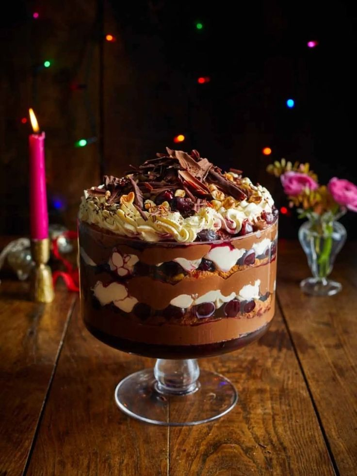

Black Forest Trifle

Description:
Easy, impressive looking spin on a classic trifle inspired by the Christmas holiday.
This recipe is full of with quick shortcuts and is sure to impress at a family gathering in under 45mins
Ingredients:
- 3x 425 tins cherries in syrup
- 300g dark chocolate
- 4 leaves gelatine
- 3x 400g tins of custard
- 100g hazelnuts
- 600ml double cream
- 1 teaspoon vanilla bean paste
- 1 heaped tablespoon icing sugar
- 3x 1cm slices of panettone
Steps:
- Drain the cherries into a measuring jug with a sieve. Add enough water
to the liquid to make up 569ml of liquid
- Pour mixture into a pot and place on medium heat.
- Transfer cherries to a bowl
- Make chocolate curls using a chocolate block and dragging a chefs knife
from the bottom ot the top of the flat surface. Make 6-8 curls.
- Snap the remaining chocolate into a heat-proof bowl and place this bowl
over the pan stirring until chocolate is melted.
- Snap 4 gelatine leaves into a bowl and cold with cold water.
Set aside to dissolve
- Remove the bowl of chocolate from the heat and pour in the custard. Mix this until it is completely combined.
- Whisk the gelatine into the cherry juice until it has dissolved and then pour it into the trifle dish. Scatter in a handful of the cherries and leave them to cool. Place them in the fridge for four hours until set.
- Next, toast the hazelnuts in a dry pan for five minutes, until they have turned a golden colour. Tip into a pestle and mortar and bash to crumbs.
- Pour the cream into a large mixing bowl, add the vanilla bean paste and sugar, and whisk them until it has turned to soft peaks.
- Next, layer up the trifle. Spoon over ⅓ of the chocolate custard by spreading it out with a spatula, and then top with one slice of panettone. Dot cherries over the panettone and drizzle with a little of the juice from the bottom of the bowl.
- Repeat the process with a layer of cream, chocolate custard, panettone, and cherries and syrup until you have three of each layer. Pipe over a final layer of cream.
- Finally, sprinkle over the chocolate curls, scatter over the hazelnut crumbs and take to the table.
See the full receipt at Jamie Oliver's Website